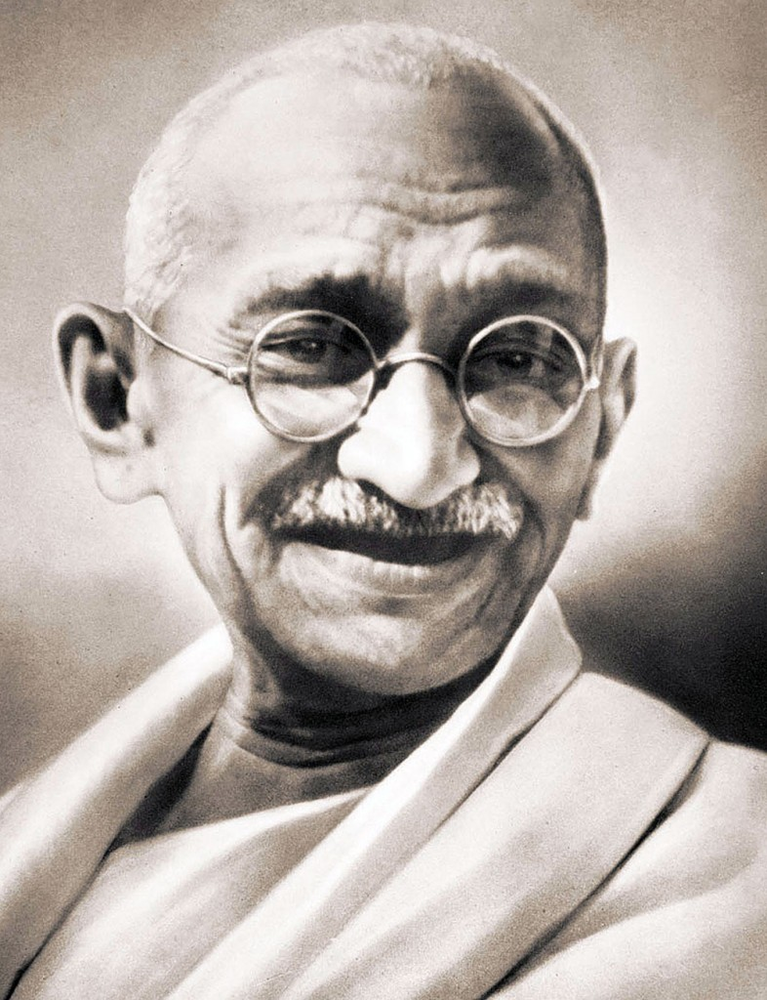

Mahatma Gandhiji
1869 - 1948
A Great Freedom Fighter!
Mohandas Karamchand Gandhi was an Indian lawyer, anti-colonial nationalist and political ethicist who employed nonviolent resistance to lead the successful campaign for India's independence from British rule, and to later inspire movements for civil rights and freedom across the world. The honorific Mahatma, first applied to him in 1914 in South Africa, is now used throughout the world.
Biography
- Full Name: Mohandas Karamchand Gandhi
- Born: 2 October, 1869
- Place of Birth: Porbandar, Gujarat
- Death: 30 January, 1948
- Place of Death: Delhi, India
- Cause of Death: Shot by Gun or assassination
- Father: Karamchand Gandhi
- Mother: Putlibai Gandhi
- Nationality: Indian
- Spouse: Kasturba Gandhi
- Children: Harilal Gandhi, Manilal Gandhi, Ramdas Gandhi and Devdas Gandhi
- Professions: Lawyer, Politician, Activist, Writer